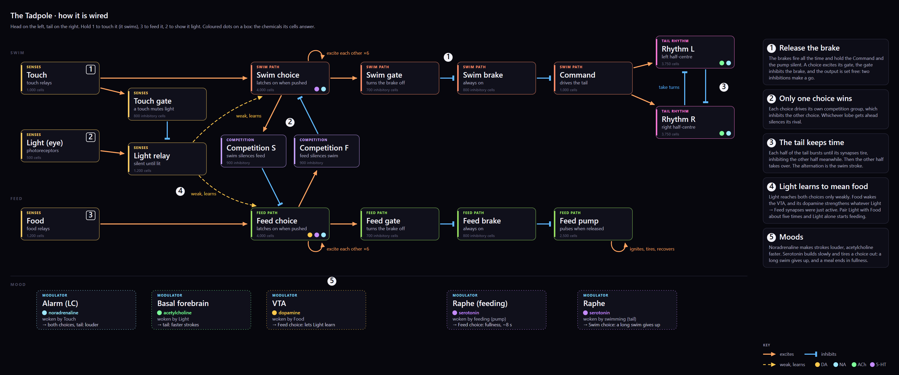

The Tadpole
A whole little animal grown from 30,000 spiking neurons in 22 groups. Touch it and it swims. Feed it and it feeds. Show it light just before food a few times and light alone makes it feed. There is no scripted logic anywhere: only spikes, synapses and neuromodulators.
Open Cortex Garden. In the Simulation tab, under Specimen, pick Tadpole: the whole specimen. It takes a few seconds to grow.
Hold 1 to touch it: it swims, its tail beating left and right. Hold 3 to feed it: the feed lobe wins and the pump below pulses.
Hold 2 (light), and while it is still on, hold 3 (food). Do this about five times and light alone starts feeding. Clear memories forgets it.
The wiring diagram


How it works
Every group, from every angle
Rendered from the live simulation, the same specimen every time. Each label points at the cell nearest its group's centre, so in some views it points through a group in front.